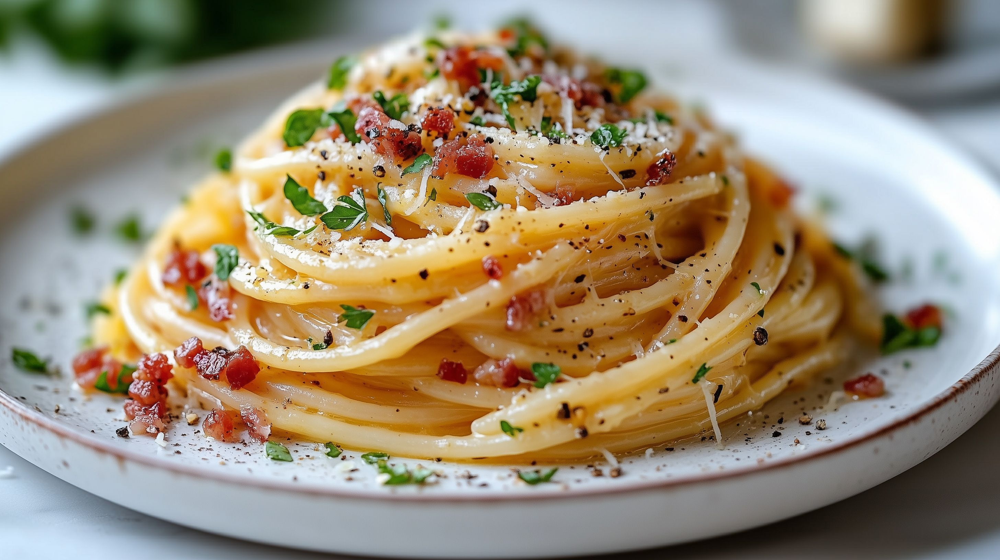

Odin-Recipes
Spaghetti Carbonara Rezept

Foto von Marco Verch, via ccnull.de, lizenziert unter CC BY 2.0
Ein einfaches und leckers Spaghetti Carbonara Rezept.
Zutaten:
- 240g Pasta
- 100g Pancetta
- 2 Eier
- 42g Parmesan
- Olivenöl
- Salz und Pfeffer
Schritte:
- Pancetta in Olivenöl anschwitzen
- Die Pasta in Saltwasser al dente kochen
- Ein wenig Kochwasser auffangen
- Die Eier mit dem Parmesan verquirlen und das Ganze mit Salz und Pfeffer würzen
- Alles zusammen erhitzen (auch die Nudeln) und fertig!